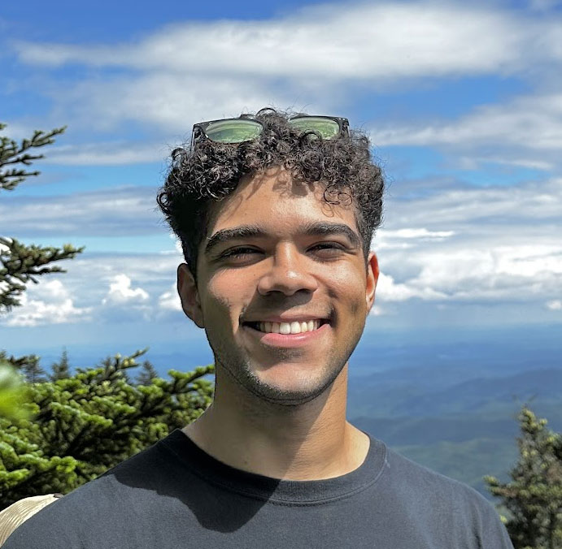

Hey!
My name is Matthew Washington! I am currently a student at Wake Technical Community College.
Where I'm From
My family moved from New Jersey to North Carolina in 2007 when I was 4 years old.
Since I had not been in New Jersey for a long time, the move here was not a big shock. As I grow older, and my town in
North Carolina becomes more populated, I begin to appreciate the quietness and slower pace that we had when first moving here.
This more relaxed lifestyle has become less prevalent here, but I find that keeping that same attitude regardless of your surroudings
helps keep you less stressed in daily life.
Hobbies
Finding new skills to learn is one of my favorite things to do! It keeps the mind active, while learning valuable skills
that can be used in the future. Especially growing up in a digital age, access to many different resources became very easy. Platforms
like YouTube have become an amazing tool to learn any skill you can think of for free. This in itself has encouraged me to try my hand at many things.
Some of my hobbies include photography, playing and making music, and Ice Skating among other activities.
I hope to turn some of my hobbies into Freelance opportunities in the future with enough practice.